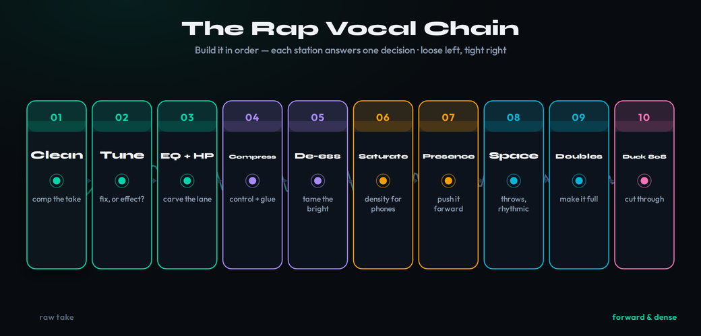
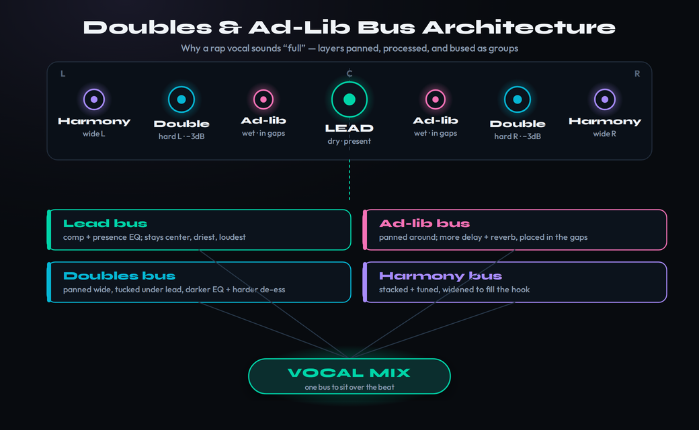
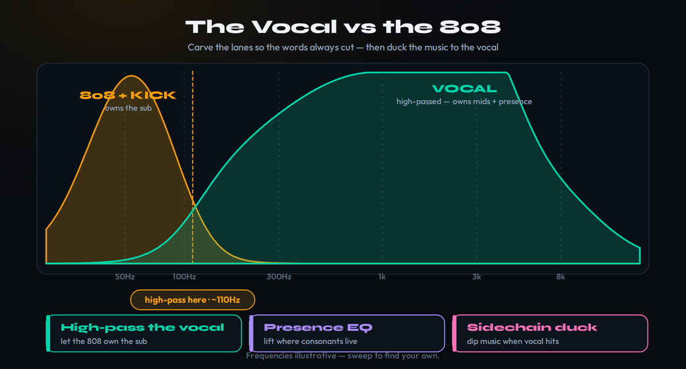

Most mixing advice is written for a singer’s voice that has to sit politely inside a band, blended into the arrangement so the song breathes around it. Rap is the opposite art. In almost every rap record the vocal is the song — it carries the rhythm, the melody, the meaning, and the personality — so the job is not to make it sit back and behave but to push it to the front, keep it loud and unwavering, and make it feel dense and physical against a beat that is itself trying to be the loudest thing in the room. That single difference flips your instincts. Moves that would be considered heavy-handed or even “wrong” on a folk vocal — hard real-time autotune, aggressive compression that never lets go, exaggerated doubles, clipping the peaks off for density — are not mistakes here. They are the aesthetic. This guide walks the rap vocal chain in build order, taught as a set of decisions rather than a preset, and it is honest about the one truth that trips people up: there is no single chain, because trap, melodic rap, boom-bap, and drill all want different things from the same sequence of moves.
Rap vocals are mixed to sit forward, loud, and dense, because the vocal is the song. Build the chain in order and tune the settings to the sub-genre: clean and comp the take, tune it (corrective, or fast real-time autotune as an effect), high-pass and subtractive EQ, compress hard (often two stages — a fast one for control, a slower one for glue), de-ess (rap is bright and sibilant), add density with saturation and a clipper so the voice survives phone speakers, presence EQ to make it cut, then space (slap and throw delays, automated reverb used rhythmically), then build the doubles and ad-lib architecture that makes a track sound “full,” and finally make the lead cut through the 808 with high-passing and light ducking. The “wrong” moves are the sound. Frequencies below are illustrative starting points — sweep to find your own.
Why rap vocals are mixed differently
Start from the function of the voice, because every processing choice flows from it. In a typical band mix, the lead vocal is one important element among many, and the engineer’s craft is balance: carving space so the voice is clear without dominating, letting the guitars and drums share the spotlight. Our general guides to mixing vocals and advanced vocal mixing teach that balance-first mindset, and it is the right one for most music. Rap inverts the hierarchy. The beat is a foundation the vocal stands on top of; the listener is there for the words and the delivery, and the vocal has to be the loudest, clearest, most consistent thing in the mix from the first bar to the last. You are not blending the voice into the track — you are mounting the track underneath the voice.
That reframing explains why rap vocal processing looks aggressive on a meter. The vocal needs to be loud and constant, so compression is heavier and often stacked, riding the level so it never dips below the beat even for a syllable. It needs to be dense, so saturation and clipping pile on harmonics that make the voice feel solid and survive small speakers. It needs to cut, so presence and “air” EQ are pushed harder than you would dare on a delicate singer. And in much of modern rap the tuning is not a secret correction but an out-front effect, the robotic snap to pitch that became a genre signature rather than a flaw to hide. None of this is sloppiness. It is a different target: a voice that is glossy, forward, and undeniable, designed for earbuds, phone speakers, and car systems where it has to win against a heavy beat. Think of this page as the companion to the general vocal guides — you already know how to make a voice sit politely; here is what changes when the voice is supposed to dominate.
It starts with a clean, comped take
No chain rescues a bad source, and rap is unforgiving here because the vocal is so exposed at the front of the mix. The cheapest improvement you will ever make is a better recording: a decent microphone, a pop filter, a treated-enough space, and a confident performance recorded with healthy headroom and no clipping on the way in. Our guide to recording vocals at home covers the capture side, and the rap-specific gear question — which mics flatter an aggressive, close, dynamic delivery — is covered in our roundup of the best microphones for rap vocals. Get this right and the rest of the chain is shaping a good performance rather than repairing a broken one.
Then comp and clean before you process. Rappers stack takes — multiple passes of the lead, then doubles, then ad-libs — and the first editing job is to assemble the best single lead from the best moments, line the words up so the consonants are tight, and clean the gaps. Cut breaths down (don’t always delete them; an audible breath can be part of the energy, but a loud one between phrases is a distraction), remove mouth clicks, and fade the edits so nothing pops. Crucially, time-align the doubles and ad-libs to the lead so the consonants hit together — loose doubles smear into a blur instead of thickening the lead. This unglamorous stage decides how tight the whole vocal feels, and it happens before a single plugin loads. A clean, comped, aligned set of takes is the real foundation; everything after this is making a good performance sound expensive.
Tuning: correction, or the effect
Tuning is the first real fork in the chain, and it is a creative decision, not a default. There are two jobs a tuner can do, and rap uses both depending on the style. The first is transparent correction: nudging a slightly flat or sharp note back to pitch so the listener never notices, the same way a pop vocal is quietly tuned. The second is the effect — the hard, robotic, instantly-snapping autotune sound that became a defining texture of modern rap and melodic rap. The same plugins do both; the difference is entirely in how fast and how hard you let them correct. Our general vocal tuning guide covers the transparent approach, and how to use autotune walks the mechanics; here the question is which look the track wants.
For the modern hard-tuned effect, reach for a real-time tuner and push it. Antares simplified its lineup in late 2025: Auto-Tune 2026 is the streamlined real-time version (around $300 for a perpetual license, or included in the Auto-Tune Unlimited subscription at roughly $25 a month), while Auto-Tune Pro 11 keeps Graph Mode for detailed manual editing. Waves Tune Real-Time is the long-time budget staple for the live, snap-to-grid sound. The recipe is the same across all of them: set the key and scale of the song correctly, then pull the retune speed almost to zero and back off any “humanize” or flex-tune so the pitch jumps instantly to the nearest scale note. That instant jump — the audible artifact of the voice being forced onto the grid — is the effect. If you are starting out, free tools like Graillon 2 and MAutoPitch get you most of the way for nothing, and our pitch correction reference lays out the parameters side by side.
Two things make or break it. First, the key has to be right, because the entire effect is the tuner forcing pitches to the notes of a scale — feed it the wrong scale and the result sounds out of tune rather than stylish. A key detector (Auto-Key, or a manual check against the beat) earns its keep here. Second, tune before you compress and saturate, not after; tuning a signal that is already crushed and distorted produces artifacts, while tuning a relatively clean take and then processing it sounds smooth. For boom-bap and a lot of lyrical hip-hop the answer to this whole section is “little or none” — the raw, untuned voice is the aesthetic, and forcing it to a grid would strip its character. Decide which world you are in before you touch a knob, because it changes everything downstream.

EQ and compression for an upfront, dense vocal
With the take tuned, EQ comes first as housekeeping. High-pass the vocal to roll off the rumble and proximity boom below the voice (often somewhere around 80–120 Hz, set by ear) — this clears the low end for the kick and 808 and stops the vocal from muddying the bottom of the mix. Then make a few subtractive cuts: sweep for any boxy buildup in the low mids and any harsh resonance up top, and pull those down a little. The goal at this stage is a clean, balanced vocal, not a finished one; the exciting additive EQ comes later, after compression and density, so you are boosting a controlled signal rather than amplifying problems.
Then compress — harder than you would a singer, and often in two stages, because rap demands a level that simply does not move. The first compressor is for control: a fast attack and a moderate-to-high ratio catching the loudest transients and the dynamic swings of an animated delivery, clamping the performance into a tight, even level. The second is for glue: a slower, gentler compressor (or a clipper, covered next) that smooths the whole thing and makes it feel solid and cohesive. Splitting the work across two stages each doing a few dB is far more transparent than asking one compressor to do 10 dB of gain reduction, which pumps and chokes. Our vocal compression walkthrough and the deeper compression guide cover attack and release in detail; the rap-specific point is that you are aiming for a vocal that is unnaturally consistent on purpose.
The other half of consistency is riding the level — automation over set-and-forget. No compressor alone makes a rap vocal perfectly even, because the energy of a verse swings hard: a whispered aside and a shouted punchline are worlds apart in level. Draw volume automation (or use a vocal-rider plugin) so quiet phrases come up and loud ones come down, doing the broad-stroke leveling that lets the compressors handle the fine, fast work. Pros automate rap vocals line by line, sometimes word by word. It is tedious and it is the single biggest difference between an amateur vocal that ducks under the beat in the quiet parts and a professional one that stays glued to the front of the mix no matter what the delivery does. If you would rather start from a vetted starting point, our roundup of the best vocal presets and chains and the interactive vocal chain builder lay out sensible orderings to adapt.
De-essing, saturation, and clipping for brightness and density
Rap vocals are bright by design — the presence and air that make a voice cut also exaggerate sibilance, and the heavy compression you just applied pushes those “s,” “t,” and “sh” sounds even harder. So de-ess after compression, where the problem is worst. A de-esser is a fast, frequency-targeted compressor that ducks only the sibilant band when it gets too loud; use the plugin’s listen mode to find the exact frequency your sibilance lives in (it differs by voice) and reduce just the harshest peaks by a few dB, not every “s.” FabFilter Pro-DS (around $179) is the transparent workhorse; oeksound soothe is the pricier resonance-suppressor that smooths harshness across the whole top end and lets you boost air aggressively afterward; and there are capable free options including stock DAW de-essers, Techivation T-De-Esser 2, and the free TDR Nova used as a dynamic band. The Bible entry on the de-esser explains the mechanism; the rap point is that a bright, forward vocal needs more de-essing than a dull one, so tame the sibilance so you can keep the brightness.
Then comes the move that separates a thin home vocal from a record that sounds expensive: density. Saturation adds harmonic content — new overtones generated from the signal — that does two things at once. It makes the voice feel solid, aggressive, and “produced” rather than clean and bare, and it adds upper harmonics that survive cheap playback. That second part matters more than anything in rap, because most listeners are on phone and laptop speakers that can barely reproduce the low body of a voice; the harmonics from saturation let the ear reconstruct a fullness the speaker physically can’t play. A touch of saturation — FabFilter Saturn 2, Soundtoys Decapitator, or your DAW’s stock saturator — on the vocal or a parallel layer of it adds grit and forward presence without you simply turning the fader up.
The harder-hitting density tool is a clipper. A clipper shaves the very loudest transient peaks off instantly — like a limiter with zero release — so it adds loudness and glue without the pumping a limiter can cause when it works hard on a busy vocal. Clip a few dB off the vocal peaks and the performance tightens, gets denser, and sits forward against a loud beat. Free options like KClip Zero, Venn Free Clip 2, and GClip do this well; paid favorites include SIR Audio Tools StandardCLIP (around $25) and Kazrog KClip 3 (around $40, with multiple flavors). Push the clipper by ear: a little adds density and lets the vocal punch; too much turns it harsh and crunchy. After the density stage, go back and add the exciting presence and air EQ — a gentle boost in the upper-mids for consonant clarity and a high shelf for sheen — on a vocal that is now controlled and dense enough to take it. The roundup of the best plugins for vocals covers specific tools across this whole stage.
Space, used rhythmically
Reverb and delay on a rap vocal are used very differently from a singer’s lush wash. A long, dense reverb pushes a voice back, and rap wants the lead forward, so the lead usually stays relatively dry — a short room or plate for a hint of dimension, often gated or automated so it doesn’t blur the words. Space in rap is mostly rhythmic: the throw. A slap or throw delay — a single repeat or a tempo-synced echo — is dropped on the last word of a line, a punchline, or an ad-lib, so it “throws” into the gap before the next phrase. It is automated to appear only where you want it, not running constantly, so it punctuates the flow instead of smearing it. Our guide to using delays creatively covers throws, ping-pong patterns, and filtered repeats, all of which are staples of rap vocal production.
Reverb, when it appears, is often automated too: a longer tail swelling on the end of a phrase and then gone, or reserved for ad-libs and doubles while the lead stays dry. Reverb on the ad-libs in particular is part of the signature wide, atmospheric sound — the lead is dry and present while the ad-libs float in a wash around it. Our guide to using reverb on vocals explains pre-delay and decay; the rap-specific instinct is restraint on the lead and generosity on the supporting layers, with everything timed to the beat rather than left on as a constant bed. Space is a rhythmic instrument here, placed deliberately, not a blanket you drape over the whole vocal.
The timing of a throw is what makes it feel intentional rather than sloppy. Sync the delay to the tempo — a dotted-eighth repeat is the classic choice because it lands off the grid and pulls the ear forward, while a quarter-note slap sits squarely in the pocket for a harder, older-school feel. Filter the repeats so they don’t crowd the next line: rolling off the highs and lows of the delay return keeps the throw audible but out of the way of the dry lead that follows it. And because the throw is automated to fire only on the chosen word, you can push its level and feedback much harder than you ever could on a constant send — a single, loud, filtered repeat on the last syllable of a bar reads as a deliberate production move, not a wash.
Doubles, ad-libs, and harmonies: the “full” sound
This is the architecture that makes a rap track sound big, and it is where the genre is most distinct. A modern rap vocal is rarely a single voice — it is a lead surrounded by doubles, ad-libs, and sometimes harmonies, each a separate recorded layer with its own job and its own processing. The lead is the single clearest, most present voice, centered and forward. The doubles are second takes of the lead (or the same take copied and shifted), usually panned out to the sides — often hard left and right, sometimes in stacked pairs — and turned down a few dB under the lead, so they widen and thicken the words without competing with the center. Tucking the doubles a little darker with EQ and de-essing them harder keeps them as a support layer rather than a second lead fighting the first.
The ad-libs live in their own world: the shouts, echoes, and reactions that fill the gaps between lines (the “yeah,” the “skrrt,” the repeated last word). They get panned around the stereo field, drenched in more delay and reverb than the lead, and placed rhythmically in the holes so they answer the lead like a call-and-response. Harmonies, where a melodic-rap hook uses them, are stacked and tuned and panned to widen the chorus. The organizing principle for all of it is the bus: route the doubles to one group, the ad-libs to another, and process and ride each group as a unit. That lets you balance the whole supporting cast against the lead with a single fader, glue each layer with its own compression, and keep the lead as the one voice that is always clearest. The “full” sound is not one fat vocal — it is a centered, dry, present lead with a carefully arranged crowd of quieter, wider, wetter voices around it.

Making the vocal cut through the 808 and beat
A rap vocal has to win against a loud, sub-heavy beat, and the place they fight is the low end. The biggest single thing you can do is stay out of the 808’s lane. High-pass the vocal so it owns the midrange while the 808 and kick own the sub — there is nothing useful in the bottom of a voice that is worth letting it mud up the most contested part of a trap mix. If you have mixed your low end carefully (our guide to mixing kick and bass covers that war in full), the vocal simply needs to live above it, present in the range where consonants and intelligibility live, leaving the sub to the beat.
When the beat is loud and the words still get swallowed, the move is a light sidechain that ducks the music to the vocal. Route the instrumental (or just the music bus, leaving the drums alone if you prefer) into a compressor triggered by the vocal, and set it to pull the beat down a decibel or two whenever the vocal is present, springing back in the gaps. Done gently it is inaudible — you don’t hear the beat duck, you just hear the vocal sit clearly on top — and it opens a consistent pocket for the words without you having to crank the vocal fader and blow out the balance. The Bible entry on sidechain compression explains the routing, and our sidechain designer helps you visualize the duck. Combine the high-pass, the pocket, and the presence EQ from earlier, and the vocal becomes always-intelligible over a heavy beat — which is exactly what car systems and earbuds demand of rap.
There is an order to these moves, and getting it wrong is why a lot of rap vocals stay buried. Carve first, duck second, and only reach for the fader last. Before you automate anything, sweep a tight EQ cut through the lower-mid range of the beat — somewhere in the area where the vocal’s body lives — and pull a couple of dB out of the music, not the voice, to clear a static lane. If a broad cut dulls the beat too much, use a dynamic EQ on the music bus keyed off the vocal instead: it only dips that band while the vocal is actually present and leaves the beat full in the gaps, which is the surgical version of the duck. With the lane carved and the pocket opening only when it needs to, the lead almost never has to be pushed louder — the words were never competing for the same space in the first place.

Loudness and the handoff to the master
Rap is a loud genre, and the vocal carries a lot of that perceived loudness, but the temptation to make everything as loud as possible is where mixes fall apart. The density work you did — compression, saturation, clipping — already pushes the vocal forward; resist the urge to also slam a limiter on the vocal bus and squash it flat, because a vocal that is clipped and limited and crushed loses the dynamics that make a delivery hit. The cleaner approach is to get the vocal sitting right against the beat in the mix, then let the master stage bring up the whole track’s loudness together, so the vocal and beat are pushed as one cohesive thing rather than the vocal being maximized in isolation and then fighting the master.
Mind the platforms, too. Streaming services normalize loudness, so a brick-walled master doesn’t end up louder than a well-balanced one — it just ends up more distorted and turned down to the same level. The win is not raw loudness; it is density and translation: a vocal that feels loud and present at any playback volume and survives the speakers people actually use. Before you call a vocal done, audition it on phone and laptop speakers and in a car if you can, because that is where rap is heard and where a vocal built only on monitors falls apart. Run the finished track through the Pocket to check the timing feel and through the broader metering tools to confirm the vocal is reading as loud and clear on small speakers, not just on your monitors. The handoff to the master is a balance decision, not a loudness contest — get the relationship right and the loudness takes care of itself.
The genre playbook
The order of the chain is universal; the settings inside it are where the sub-genres diverge, and matching the conventions of the style is most of the battle. In trap and melodic rap, lean in: heavy real-time autotune as an out-front effect, wide hard-panned doubles, generous throw delays and a busy ad-lib architecture, and aggressive density so the vocal is glossy, huge, and modern. This is the maximal end of the spectrum, and the production tricks in our trap beat guide assume a vocal mixed exactly this way. In boom-bap and lyrical hip-hop, go the other direction: little or no tuning, a drier, more midrange-forward vocal that sits in the pocket with the drums, and far less obvious processing — the raw character of the take is the point, and over-producing it strips the soul out. The vocal is still forward and clear, just honest rather than glossy.
In drill, the vocal tends to sit dark and aggressive over the sliding 808s and menacing beats — often a tight doubled lead, minimal space, and a hard, present tone that matches the intensity of the production; our drill production guide covers the beat side of that aesthetic. Across all of them the decisions are the same — correct or effect, how hard to compress, how dense to push it, how wide to build the doubles, how much space, how to fit it against the 808 — you are just answering each one differently for what the style asks the vocal to be. Listen to two or three reference tracks in the exact lane you are working in, match the vocal’s forwardness, tone, and width to them, and you will land far closer than any preset can take you. The chain is a menu; the genre tells you what to order.
Build the Rap Vocal: 3 Drills
Run these in order on a real verse. Each one builds a piece of the forward, dense, full sound so you stop guessing and start deciding.
- Detect or confirm the song’s key, and set a real-time tuner (Auto-Tune, Waves Tune Real-Time, or free Graillon 2 / MAutoPitch) to that exact scale.
- Pull the retune speed almost to zero and turn off humanize and flex-tune, then listen for the hard snap to pitch — that artifact is the modern effect.
- A/B against a transparent setting (slow retune speed). Hear the difference, and decide which one your track wants. You just made tuning a creative choice instead of a default.
- On a tuned, EQ’d lead, set two light compressors in series — a fast one for control, a slower one for glue — each doing only a few dB rather than one doing all the work.
- De-ess after the compression, then add a touch of saturation and clip a couple of dB off the peaks with a free clipper (KClip Zero, GClip). Notice how the vocal gets solid and forward without the fader moving.
- Draw volume automation so quiet phrases come up and loud ones come down. Play it against the beat — the vocal should never dip under the track, even in the quiet lines.
- Time-align your doubles and ad-libs to the lead so consonants hit together, then bus the doubles to one group and the ad-libs to another.
- Pan the doubles wide and tuck them a few dB under the lead with a darker EQ; pan the ad-libs into the gaps and give them more delay and reverb than the dry, centered lead.
- High-pass the lead off the 808, then sidechain the music bus lightly to the vocal so the beat ducks a decibel or two and the words always cut. Solo nothing — judge it all in the full mix.
Frequently Asked Questions
There is no single chain, but the order is consistent: clean and comp the take, tune it (corrective or as an effect), high-pass and subtractive EQ, then compression — often two stages, a fast one for control and a slower one for glue — then de-ess, then saturation or clipping for density, then presence EQ, then space (delays and reverb), and finally the doubles, ad-libs, and ducking against the beat. Build it in that order because each move changes what the next one needs. The settings inside the order shift by sub-genre, but the sequence rarely does.
Forward and loud. In most rap, the vocal is the song — it carries the melody, the rhythm, and the meaning — so it sits on top of the beat rather than blended into it. That is the opposite instinct from a lot of band mixing, where the voice tucks into the arrangement. Practically it means heavier, more consistent compression so the level never dips, presence and air EQ so it cuts, and density processing so it feels solid against a loud beat. You are not trying to make it polite; you are trying to make it the loudest, clearest thing in the room.
Use a real-time tuner with a fast retune speed and the scale set to the song’s key. In Auto-Tune 2026 or Auto-Tune Pro 11 that is a low retune speed (near zero) and little or no flex-tune or humanize; in Waves Tune Real-Time it is a fast speed with note transition pulled down. The faster the correction snaps to the grid, the more obvious the effect. Tune to the correct key first — a detector like Auto-Key helps — because the robotic artifact is the tuner forcing pitches to scale notes, and a wrong scale makes it sound off rather than stylish. Free options like Graillon 2 and MAutoPitch get you most of the way for nothing.
Treat them as supporting layers, not copies of the lead. Doubles usually get panned out to the sides (often hard left and right, or in pairs), turned down a few dB under the lead, and frequently tucked with their own de-essing and a slight EQ darkening so they thicken the lead without competing with it. Ad-libs live in their own lane: panned, often drenched in more delay and reverb than the lead, and rhythmically placed in the gaps. Bus your doubles and ad-libs to their own group so you can process and ride them as a unit, and so the lead stays the single clearest voice.
Because phone and laptop speakers can barely reproduce low frequencies, and a vocal that relies on body and proximity warmth loses that body on small speakers. The fix is harmonic density: saturation and clipping add upper harmonics that survive cheap playback and let the ear reconstruct the fullness. A little saturation on the vocal, or a clipper shaving the loudest peaks, makes the voice read as loud and present on a phone without you simply turning it up. Always check your mix on actual phone and laptop speakers, because that is where most rap is heard.
Often a clipper, sometimes both. A clipper shaves the loudest transient peaks instantly, with no release, so it adds density and loudness without the pumping a limiter can introduce when it is working hard on a busy vocal. Many engineers clip a few dB off the vocal peaks — with a free tool like KClip Zero, Venn Free Clip 2, or GClip, or paid ones like StandardCLIP (around $25) or KClip 3 (around $40) — to glue the performance and let it sit forward. A limiter can still catch the absolute peaks after that. Push the clipper by ear: a little tightens, too much turns the vocal harsh and crunchy.
Carve and duck. First make sure the vocal is not fighting the 808 in the low end — high-pass the vocal so it owns the midrange while the 808 owns the sub. Then, if the beat still swallows the words, sidechain the beat (or just the music bus) lightly to the vocal so the instrumental dips a decibel or two whenever the vocal is present, opening a pocket for it. Presence EQ around the consonant range and density processing do the rest. The goal is a vocal that is always intelligible over a loud beat, which is exactly what streaming and car systems demand of rap.
Yes — same order, different settings. Trap and melodic rap lean into heavy real-time autotune, wide hard-panned doubles, generous throw delays and ad-libs, and aggressive density so the vocal is glossy and huge. Boom-bap and a lot of lyrical hip-hop go the other way: little or no tuning, a drier and more midrange-forward vocal that sits in the pocket with the drums, and far less obvious processing, prizing the raw character of the take. Drill sits dark and aggressive, often with a tight doubled lead and minimal space. Pick the moves that serve the style; the chain is a menu, not a recipe.